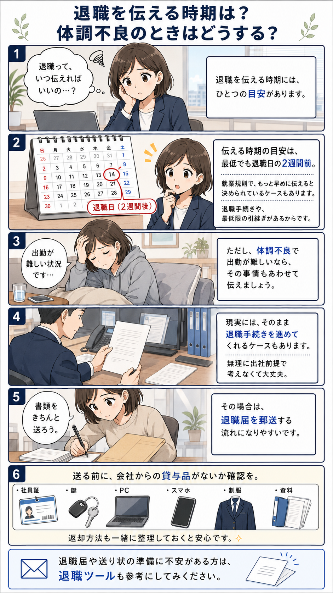

退職を伝える時期はいつ？体調不良で出勤できない場合の対応
退職を伝える時期の目安と、体調不良で出勤が難しい場合の伝え方、 退職届を郵送するときの注意点を整理します。

退職を伝える時期はいつがいい？
退職を会社に伝える時期は、最低でも退職日の2週間前がひとつの目安です。
これは、退職手続きそのものや、最低限の引継ぎ、会社側の事務処理があるためです。 ただし、会社によっては、就業規則で「1か月前まで」など、 もっと早めに申し出るよう定めているケースもあります。
そのため、退職を考え始めたら、まずは自分の会社の就業規則を確認しておくと安心です。 ただし、就業規則の内容と法律上の考え方は別の問題になることもあるため、 不安がある場合は、労働基準監督署や専門家に相談することも検討してください。
体調不良で出勤できない場合はどうする？
体調不良などで出勤すること自体が難しい場合は、 無理に出社する前提で考える必要はありません。
その場合は、退職の意思だけでなく、 「体調不良により出勤が難しい状況であること」もあわせて会社へ伝えるとよいでしょう。
会社としても、退職する人とのやり取りに長く時間をかけ続けるより、 必要な確認を済ませたうえで、現実的に退職手続きを進めるケースがあります。
ただし、会社の対応は状況によって異なります。 連絡内容は、できるだけ記録に残る形にしておくと安心です。
退職届を郵送する場合の注意点
出勤が難しい場合や、会社と直接やり取りを続けるのが難しい場合は、 退職届を郵送する流れになることがあります。
郵送する場合は、退職届だけを送ればよいとは限りません。 会社から借りているものがないか、事前に確認しておきましょう。
- 社員証
- 健康保険証
- 制服
- 会社の鍵
- パソコン・スマートフォン
- 会社資料・マニュアル類
これらの貸与品は、退職届を送るタイミングで一緒に返却するか、 返却方法を会社へ確認しておくとトラブルを避けやすくなります。
特に、鍵やパソコン、会社資料などは、会社側としても回収が必要なものです。 返却が遅れると、退職後に追加のやり取りが発生する可能性があります。
退職時のやり取りを減らすには
退職時は、退職届だけでなく、 貸与品の返却、必要書類、保険証の扱い、離職票や源泉徴収票など、 会社側と確認すべき項目が複数あります。
口頭だけで済ませようとすると、 「何を伝えたか」「何を返したか」が曖昧になりやすいです。
そのため、退職届を郵送する場合は、 送り状やチェック項目を整理して、会社に伝える内容をまとめておくと安心です。
退職届や送り状の準備に不安がある方へ
退職届の作成や、郵送時に添える送り状の整理に不安がある方は、 退職ツールも参考にしてみてください。
会社への連絡内容や返却物を整理しながら、 郵送前の確認に使える形で準備できます。
退職ツールを見る